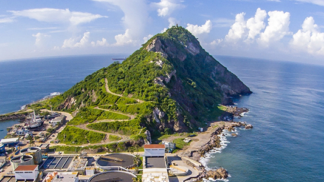

Mazatlán, Sinaloa, is one of my favorite places. It is a place full of joy, with very warm and helpful people, where the sea breeze refreshes your soul
Mazatlán is a picturesque port city with beautiful beaches and plenty of pleaces to visit and discover; it boasts the longest boardwalk in the world and the highest natural lighthouse.
Without a doubt, it is a place to enjoy!

